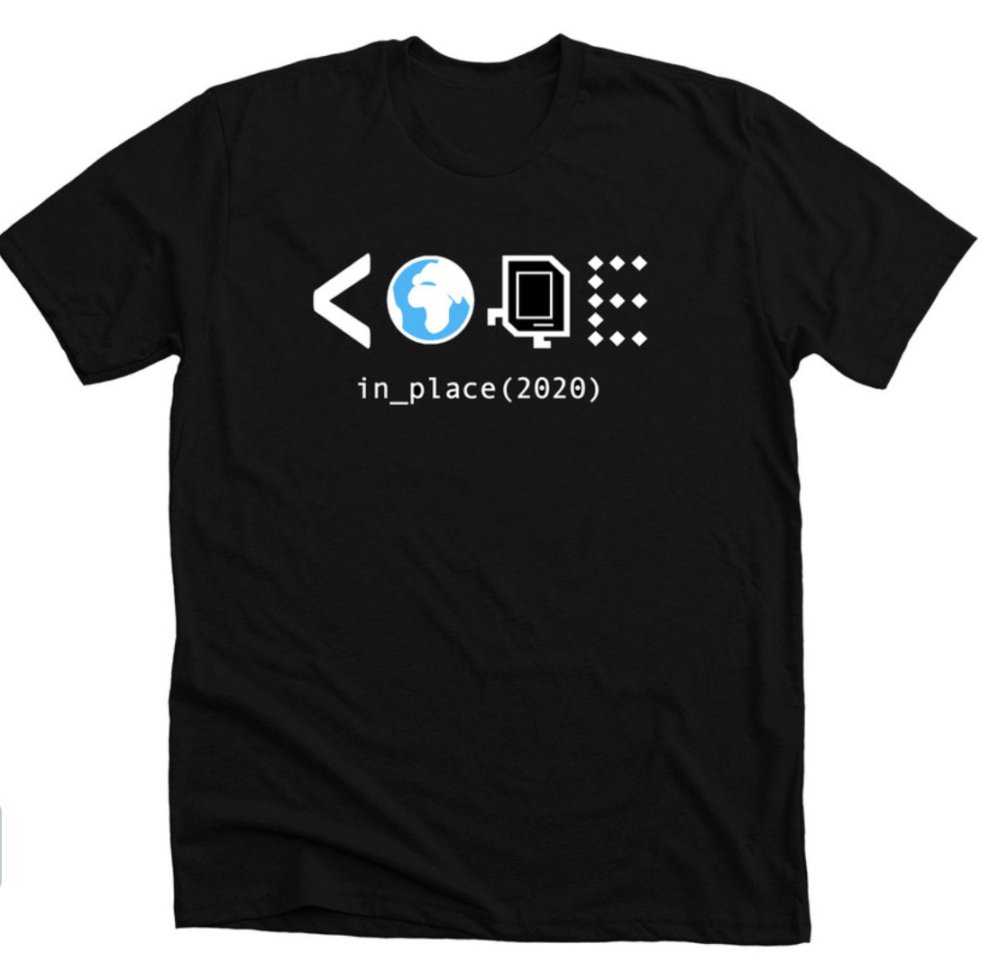

Summary
I have had a wonderful experience teaching students how to code in Python through the Code in Place program. The best part of the experience has been the community building and engagement that are novel in the online learning world. So, thank you for giving me the chance to be a part of this, Code in Place team!
Introduction
The novel coronavirus has upended our lives in more ways than one. To be a part of the solution, I started by visualizing the number of confirmed positive cases in the state of Minnesota. The day after, I saw the opportunity to be a volunteer Python educator for Stanford University. However, there was a problem.
I was in bed at around 11ish PM on April 3rd when I started filling in the Google Form application on my phone for this Code in Place program. The due date was April 3rd. After answering a couple questions such as, Tell us about yourself (briefly, just a few sentences), I got stuck on Record a 5 min demo of yourself teaching MoonWeight (see handout for instructions). Answer this question with a link to your video.
I almost quit. But, I know that humans are reading through this form. If I were to write an explanation as to why I did not record a video and optimize all the other parts of the application to ensure my credibility, they would reach out. So, I answered, I am writing this in bed as I just learned about it tonight and will be able to send it to you if given a chance. I finally submitted all but the video at 11:31 PM.
Two days later, I was overjoyed when an email from the Code in Place team came to my inbox requesting my teaching video for the MoonWeight challenge. I recorded the teaching part and sent it back to them hoping that I would get picked as one of the section leader.
A few days later (April 7th), the welcome email came to my inbox:
Congratulations!
We reviewed close to one thousand section leader applications and we were impressed with your teaching! This is a formal invitation to join the Code in Place teaching team…
So the journey of being a volunteer section leader for Code in Place began from here on out.

Credit: Hoi L who won the Code in Place T-shirt design
Code in Place Experience
TL;DR: it was a wonderful experience.
Being a part of the Section Leaders community
I feel fully supported all throughout the lifecycle of the course by the team. Some of the highlights:
- We had a virtual first meeting with Chris and Mehran (the two professors who provided lecture content) to welcome us all in this whole unique experience.
- To prepare us, we had training a couple days before our first section meeting. It helps us plan our first meeting and ensures that we have a good first impression.
- We then regrouped to share our first meeting with other section leaders and see where we can improve our future section meetings.
- From week to week, Chris checked in with us to see how the section went. It was genuinely moving to see him (and his team) created an alternative material for week 3 when the first few sections who taught it had a bad experience with the original material.
- The teaching team provided us section leaders with learning week to celebrate the end of our volunteering experience. It was inspiring to talk about the foundation of computer science education with other section leaders and also wrapping our head around the idea of
zen of python.
Cultivating a community in my section
With 8000+ students in the class, it can be easy to get lost in the crowd. So, the team provided a small group of 10-12 students a section to discuss and reinforce the materials that were given in the lecture.
Being one of the section leader, I tried my best to be a good support system to my global students. However, I believe that every section has their own unique dynamics. Here are a couple steps that I took for my section to cultivate a community:
- I used polls and breakout sessions to see what would be the best way to make the session engaging. Breakout sessions seem to be what they enjoy the most after I asked for their feedback in betweeen week 1 and 2. This resulted in us having 2 breakout sessions each week to ensure that they get plenty of time to engage with other students in the group.
- After each session, I make sure that the students have the content of the presentations and codes that they created so that they can easily refer back to it for their homework.
- I tried to be available to my students each week. So, I provided them with office hours to help them with their homeworks and that seem to work well. I also reviewed their code every week to provide feedback on their coding aesthetics.
- I often say
I will get back to youwhen a student ask something that I have an inkling to, but not 100% sure of. I would rather sayI am not surethan teaching the wrong thing, especially in a fundamental course.
Service to the Code in Place community
Code in Placebeing an introductory course to Python is super important. I realized early on that even the very first step of installing python andPyCharmcan be quite a hurdle for some of our students. I spent a couple hours helping students with the installation process in the beginning of the term. One of the highlight from it was this banter between me and one of the student after I tried to provide several ways to fix his installation problems:
Me: … So, this might be the oldest trick in the history of software engineering… but have you tried to restarting your computer and see whether you can open the program after the restart?
Student: I will implement this ancient wisdom.
It is important to keep things light-hearted in the midst of this global crisis. So, I wrote a simple command line program to mimic How much toilet paper? as one of the worked example for students to learn about variables.
Creating google slides each week ended up becoming quite a routine for most of us section leaders. To save time, I scoured the teaching thread to see what others have done and re-purposed them for my section with my own twist. During the last three weeks of the course, I ended up collecting ones that I found and posted it in a thread for others to see each week.
Going over and commenting a few of the optional final projects that students submitted. So far, the works that I reviewed are super creative and inspiring!
Final Thoughts
I wrote this post to reflect on the uniqueness of this wonderful community of students and teachers. Others have done more wonderful things than writing a post. One of the students, Regina, compiled her lecture notes on her website. The team created a podcast called Humans of Code in Place. Last but not least, one of the section leader even created a Karel Helper website. These are great examples of human ingenuity during a global crisis, so please check them out!
In conclusion, thank you. Thank you to the teaching team for letting me be a part of this experience. Thank you to my students for letting me be a part of your coding journey. Thank you to my readers for reading through this post.
Be well,
Atun